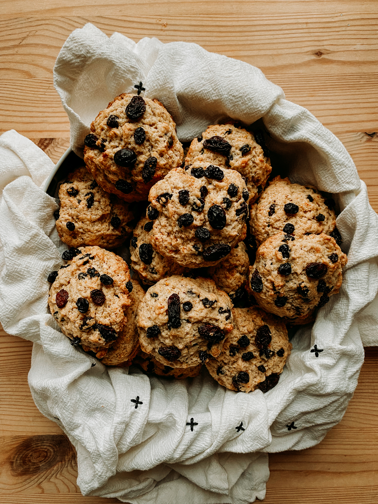
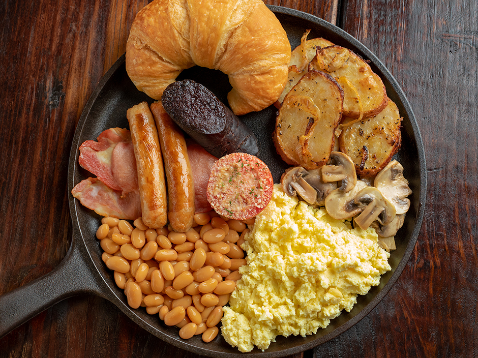
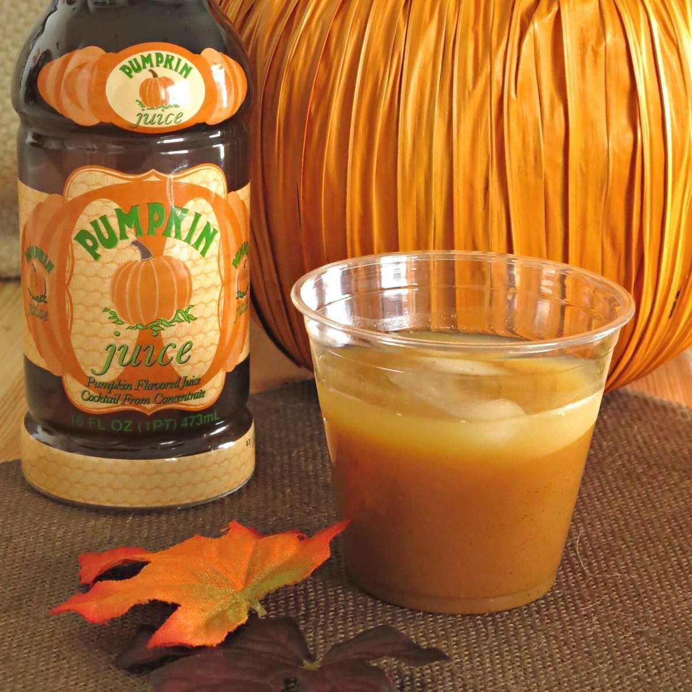
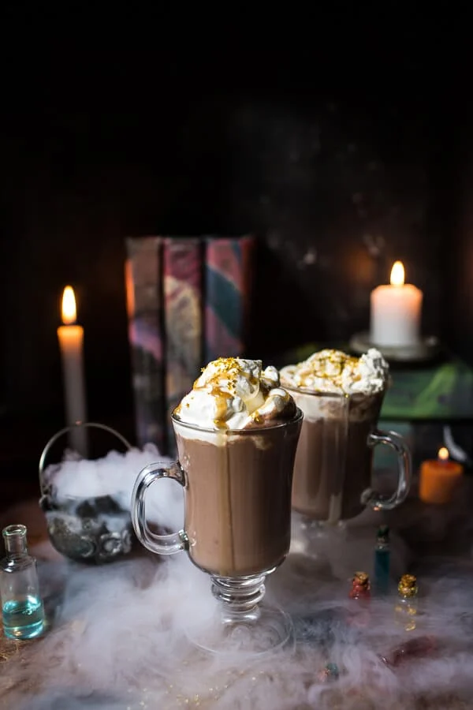

Breakfast Menu
Hagrid's Rock Cake (250 cal.) - 6 Sickles
This tooth-chipping treat is Rubeus Hagrid's overbaked take on a classic scone. You're either really brave or really hungry if you're ordering this.

Traditional English Breakfast (1,000 ca.) - 2 Galleons
Though Hogwarts lies somewhere in the Scottish highlands, a traditional English breakfast is commonly served in the Dining Hall. Complete with a fried tomato, this dish is one of the heartiest options for starting off a school day well.

Pumpkin Juice (75 cal.) - 3 Sickles
While enjoyed any time of day, pumpkin juice is defintely a breakfast favorite for Hogwarts students. Flavored with pumpkin, apple juice, and pie-worthy spices, this drink is sure to make your mouth water.

Hot Chocolate (200 cal.) - 4 Sickles
No one at Hogwarts can resist the rich, creamy splendor of hot chocolate on a cold morning, not even Albus Dumbledore. What a powerful wizard that one is...Maybe he knows something about hot chocolate that we don't...
